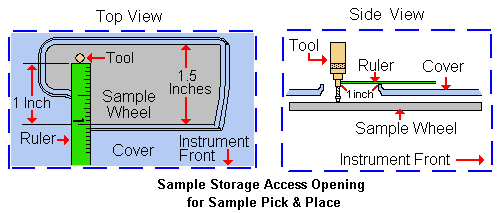
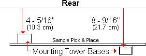
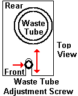

Adjusting Sample Pick-and-Place
This procedure describes how to mechanically adjust the position of the sample pick-and-place to the sample storage module cover, waste tube, and vertical home position prior to performing any alignments on this module.
Required Materials:
- Pick-and-place auto-align tool
- Retractable tape measure or ruler
The adjustments for this module include:
- adjust sample pick-and-place to sample storage module position
- adjust sample pick-and-place to vertical home position
- adjust sample pick-and-place to waste tube position
Note: Normally the sample pick-and-place is removed by removing the gantry only and not the towers, thus it is rare that mechanical adjustment will be required.
- Verify that the clear cover is securely fastened over the sample storage module.
- Select Main Menu > Diagnostics > Device Diagnostics > Mechanics > Alignments.
-
Adjust sample pick-and-place to sample storage module position.
If you determine that the current adjustment is correct for the sample pick-and-place, you may not have to complete this entire step.
- Select Sample Wheel as the device and Sample P&P Inner as the position.
-
Select
Home Device > Move to Position.
Note: The sample wheel will move to position and the sample P&P will move horizontally to a position over the access hole in the clear cover. The sample P&P does not make a vertical move.
- Install the pick-and-place auto-align tool over the collet on the sample P&P (the leftmost collet as viewed from the front of the instrument).
-
Measure the distance from the tool to the inner front edge of the cover opening.

Note:- There are different shapes of clear covers. One is rectangular, and the other as shown in the drawing. The measurement is the same for both styles.
- The ruler should line up with the area of the P&P tool above the spring.
-
Determine if the current adjustment is correct. The distance from the tool to the inner front edge of the cover opening should be 1 ±1/8 in (2.54 ±0.03 cm).
- If the distance is within the range, then the current adjustment is correct. Remove the auto-alignment tool.
- If the distance is not within the range, then the current adjustment is incorrect. Continue with the adjustment of the sample pick-and-place to the sample storage module cover.
-
Slightly loosen the screws at each of the two sample P&P mounting towers.
Note: The towers should be moveable, with little or no slop.
- Select Sample P&P as the device, then select Motors > Disable Both Motors.
- Adjust the sample P&P towers until the required measurement of 1 ±1/8 in (2.54 ±0.03 cm) is obtained.
-
Adjust the sample P&P assembly so that the distance from the back edge of the instrument rear to the back edges of the towers is as shown in the diagram.

Note: Maintain the sample P&P to sample storage cover alignment while adjusting the sample P&P assembly. The total difference in measurement of both towers should be no more than ± 1/8 in (±0.03 cm). - Tighten the sample P&P tower mounting screws.
- Select Motors Enable All Motors.
- To verify this adjustment, go back to the beginning of this step and determine if the adjustment is correct.
-
Adjust sample pick-and-place to waste tube position.
If you determine that the current adjustment is correct for the sample pick-and-place, you may not have to complete this entire step.
- Select Sample P&P as the device and Waste Tube as the position.
- Select Home Device > Move X/Y to Position.
- Install the pick-and-place auto-align tool over the lowest collet on the sample P&P (the leftmost collet as viewed from the front of the instrument).
- Select Z Motor Off.
- Manually move the carriage with the tool downward, using the index wheel on the left end of the gantry.
- Observe the front to rear positioning of the tool in the waste tube.
-
Determine if the current adjustment is correct.
- If the tool is centered in the waste tube, the adjustment of the sample pick-and-place to the waste tube is correct.
- If the tool is not centered in the waste tube, the adjustment is incorrect. Continue with the adjustment of the sample pick-and-place to the waste tube.
-
Loosen the adjustment screw that secures the waste tube to the instrument.

- Move the waste tube forward and rearward until the waste tube is centered under the tool.
- Tighten the adjustment screw.
- To verify this adjustment, go back to the beginning of this step and determine if the adjustment is correct.
-
Adjust pick-and-place to z-home position.
- Select the pick-and-place type being serviced as the device option, and then select Motors > Disable Both Motors.
- Move the pick-and-place carriage assembly to the uppermost position.
- Select the appropriate pick-and-place as the device option, and then select Motors Enable All.
- Loosen the index wheel attachment screw at the end of the upper gantry rod.
- Rotate the index wheel to a position where the square hole in the wheel is centered in the sensor.
- Tighten the index wheel attachment screw.
-
If any adjustments were made, perform the sample pick-and-place alignments.
Note: Refer to the P&P: Aligning Pick-and-Place Module procedure.